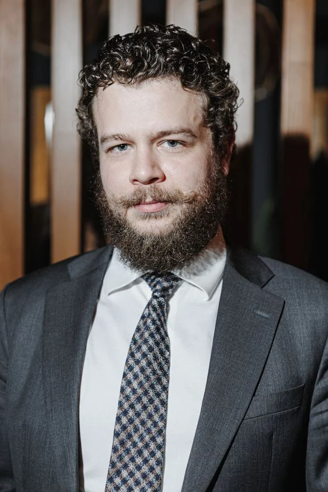

Здравствуйте,
Ответьте голосом на 15 вопросов, и я сделаю из ответов сценарии Ваших роликов
Игорь Ильин, «Бизнес по-русски»

Игорь Ильин, «Бизнес по-русски»
Как отвечать
Из Ваших ответов мы соберём сценарии коротких роликов, поэтому нам нужны не общие слова, а случаи из жизни: когда это было, где, кто что сказал, чем кончилось, с цифрами. Отвечайте голосовыми в Telegram и в начале называйте номер вопроса. Говорите сколько хочется, сбиваться и повторяться можно, мы всё расшифруем. На всё уйдёт около часа, удобнее в два-три захода по пять вопросов. Первые вопросы самые важные, на них не жалейте времени. Вопрос не подходит - пропустите.
Начните голосовое с номера: «Вопрос третий...». Одно голосовое - один вопрос. Шлите мне, Игорю Ильину, в Telegram.
15 вопросов
Вспомните последние разговоры с клиентами, знакомыми, подписчиками. Какие вопросы звучат снова и снова? Перечислите все, какие вспомните, и на два-три самых частых ответьте так, как отвечаете человеку вживую.
Например: «А правда, что отбеливание портит зубы?» Его задают на каждом втором приёме, и ответ всякий раз удивляет.
Что повторяют люди, советчики, интернет? Расскажите случай, когда эта вера кому-то навредила или когда Вы сами в неё верили, пока не убедились в обратном.
Например: все думают, что машину выгоднее купить в кредит, а потом считают переплату и хватаются за голову.
Когда это было, чего Вы ждали и что стояло на кону? Что пошло не так, что Вы чувствовали в тот день и что делали потом: через неделю, через месяц? Как поняли настоящую причину? Если провалов несколько, расскажите два-три.
Например: открыл второе кафе в лучшем месте города, через полгода закрыл, а причину понял только через год.
Был ли случай, разговор, событие, после которого Вы стали жить или работать иначе? Каким Вы были до, что произошло, каким стали после?
Например: после выгорания перестала брать клиентов по выходным, и доход вырос.
Какие правила Вы повторяете людям чаще всего? Назовите все, какие вспомните, лучше одной фразой каждое. Про каждое расскажите: откуда оно взялось и когда Вы последний раз применяли его сами. Живёте Вы по нему сами или советуете другим?
Например: «Никогда не подписываю договор в тот же день». Взялось оно после одной сделки, на которой я потерял деньги.
Расскажите один-два случая: с чем человек пришёл, что Вы сделали или сказали, что изменилось и через сколько. Имя называть не нужно.
Например: пришла с долгом 400 тысяч, через восемь месяцев закрыла его, и главным оказался не заработок, а одна привычка.
Кто её сказал: учитель, наставник, родитель, клиент, случайный человек? Когда и при каких обстоятельствах? Где она пригодилась Вам потом, в другом деле?
Например: первый начальник сказал «клиент платит за спокойствие, а не за работу». Я понял это только через десять лет.
Расскажите обычный день или обычную работу по шагам: что Вы делаете первым делом, что всегда, что никогда. Где Вы поступаете не так, как принято, и почему?
Например: утром первым делом звоню самому трудному клиенту, а почту читаю только после обеда.
Что в Вашем деле переоценено, а что недооценено? Где люди переплачивают, а где экономят зря? Можно расставить по местам: лучшее, среднее, худшее.
Например: дорогой матрас ничего не даёт, если подушка не та, а подушка стоит в десять раз дешевле.
Сколько лет Вы этим занимаетесь, сколько людей, проектов, побед, сколько вложили и потеряли? Какой результат лучший? Называйте числа так, как Вы их помните, и одной фразой расскажите, за каждым числом что стоит.
Например: двенадцать лет в ремонте, около трёхсот квартир, и только одна, за которую до сих пор стыдно.
Что было неловким, нелепым, смешным: Ваша ошибка, странный клиент, абсурдная ситуация? Где и когда это было, кто что сказал?
Например: пришёл на важную встречу в разной обуви и заметил только на фотографии.
Человек посмотрел ролик и хочет начать. Что ему сделать сегодня, а что до конца недели? Одно маленькое безопасное дело на 5-15 минут. Когда его делать, как понять, что сделано, и что делать, если пропустил день?
Например: сегодня вечером выписать все свои подписки и отменить одну. В пятницу посчитать, сколько сэкономили.
Что человек может у Вас купить, с какой бедой он к этому приходит и что получает? Что у Вас спрашивают перед покупкой, что останавливает? Кому Вы честно говорите «Вам это не нужно»?
Например: консультация на час. Больше всего боятся, что я начну продавать курс, а я его не продаю.
Что сохранилось из историй, которые Вы рассказали: фото, видео, грамоты, письма, первые чеки, старые вещи? Пришлите в Telegram и одной фразой напишите, к какому вопросу это относится. Если что-то можно снять сейчас, предмет на столе или место, назовите его.
Например: фото первого магазина 2009 года, первая заработанная купюра в рамке.
Кого из названных людей можно называть по имени, а кого только «знакомый» или «тренер»? Можно ли называть город, компанию, вид спорта или деятельности, суммы? О каких историях и темах Вы не хотите говорить в роликах совсем?
Например: учителя по имени можно, компанию бывшего партнёра нельзя, о разводе не рассказываю.